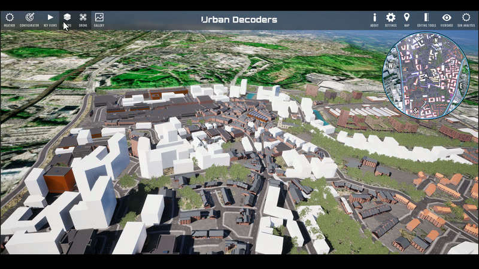
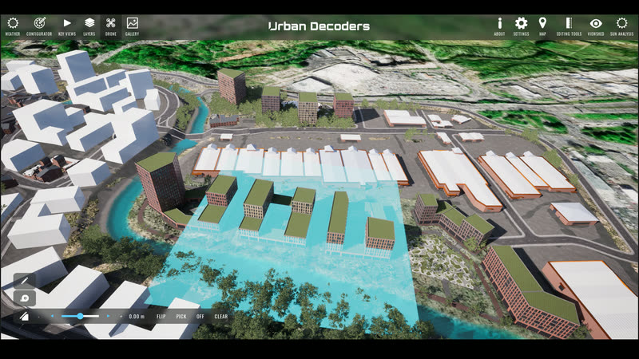
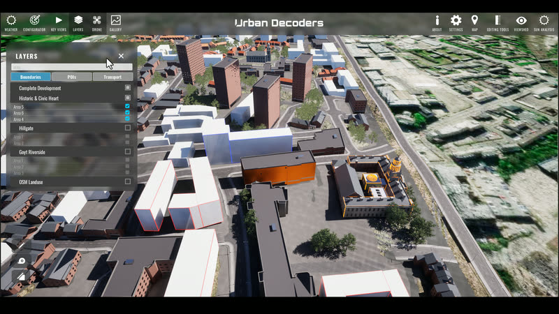
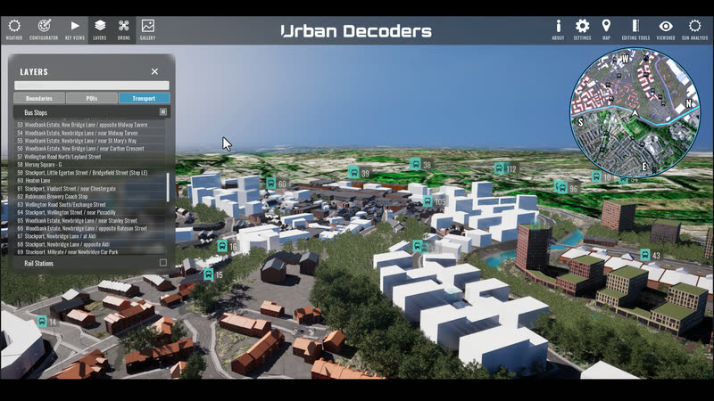

基盤はひとつ。オプションは組み合わせ可能。
意思決定とともに育つツイン。
すべてのツインは、同じ周辺環境モデルとWebビューアから始まります。オプションは独立したモジュールで、どの順番でも追加できます。そのため、敷地の検討は小さいままにでき、都市ツインではすべてをリアルタイムで動かせます。このページでは、基盤に含まれるもの、ツインでできること、制作と納品の方法をまとめています。
周辺環境モデルとWebビューア。
GIS、オープンデータ、すでにお持ちのデータを整理し、実際の座標に合わせた基盤をつくります。座標系（CRS）は明記します。この基盤は、リンクから誰でも開けるWebビューアとして提供します。ほかのすべては、この基盤の上に載ります。
- 周辺環境レイヤー。地形、建物の外形と高さ、区画、交通網、都市計画上の制約。英国の案件ではEPSG:27700、またはご指定のCRSで作成します。
- 敷地・計画案のボリューム。お客様のマスタープラン、または最初の容量検討モデルを基盤に配置します。延床面積（GFA）、建蔽率、用途・住戸構成を示します。
- Webビューア。レイヤー、ストーリー、注目地点を表示します。インストール不要で、どの端末でも使えます。ホスティングは、お客様のドメインでも当社のドメインでも可能です。
- 独自のマーカーとアイコンを、お客様のブランドまたは自治体の地図スタイルに合わせて用意します。
- フィードバックの送信先を、ご指定のメールアドレスに設定します。
- すべてを引き渡し。モデル、データ、サイトのアーカイブはお客様のものです。第三者のサービスに縛られることはありません。
2つの制作方法。
お手持ちのデータから
GISデータ、BIMやRhinoのモデル、マスタープランの図面一式、既存のレンダリングをお持ちの場合です。それらを実際の座標に合わせて整理し、基盤にします。そのうえで、Webビューアを構築します。
- IFC · RVT · 3DM · DWG · SKP
- GeoJSON · GPKG · SHP · CityGML
- 点群 · フォトグラメトリ · 3D Tiles
- 初回ツインまで3〜6週間
敷地の範囲とオープンデータから
まだモデルがない場合です。敷地の範囲と、検討したい問いをお送りください。OS（英国陸地測量部）、OSM、LiDAR、計画ポータル（都市計画の申請情報サイト）、事業者のリアルタイムデータから、周辺環境を組み立てます。そのうえで、最初のボリューム案をお客様と一緒に作成します。
- 敷地境界線（レッドライン）のPDF · GeoJSON · DXF
- OS Open · OSM · Environment Agency LiDAR（英国環境庁）
- 自治体のGIS · 計画ポータル · TfGM（グレーター・マンチェスター交通局）のリアルタイムデータ
- 初回ツインまで4〜8週間
ツインにできること。
Webビューアに含まれる16のツールです。どれもストックポート・イーストのツインで収録しました。タイルにカーソルを合わせると再生します。すべてのツールが実際の座標に合わせた同じ基盤の上で動くため、計測値、影、バス路線がすべて整合します。










委員会の画面から、展示ブースまで。
リンクひとつで開けます。どの端末のブラウザでも使え、インストールは不要です。通信が遅くても動きます。
会議室でも、Teamsでも、その場で操作できます。自治体の担当者は、モデルを動かしながら質問に答えられます。
住民の意見募集イベント、展示会、ビジターセンター向けの大型タッチ画面です。
VRは、お披露目や公開イベントに。大型の運用画面は、運用が始まった後のエリア管理に。
ツインの作業範囲を1分で試算。
範囲とレイヤーを設定してください。区分、目安の期間、関係するモジュールが表示されます。価格は表示しません。価格は初回ヒアリングの後にお伝えするためです。
区分：敷地は5 ha未満、地区は100 haまで、都市はそれ以上。期間は、最初に使えるツインができるまでの目安の幅です。納品スケジュールではありません。
モデル、整理したデータ、サイトのアーカイブをお渡しします。ホスティングは、当社、お客様のドメイン、自治体のシステム内のいずれでも可能です。
CCTVは、匿名化した集計数に変換します。顔は一切扱いません。すべてのリアルタイムデータは、データ所有者の利用条件に従って扱います。公共調達、セキュリティ審査、監査に対応できるようにつくっています。
公開後は保守契約により、ツインを計画とリアルタイムデータに合わせて更新し続けます。そのため、ツインが現実の対象とずれることはありません。